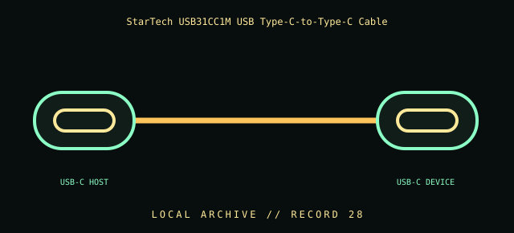

[ INDIVIDUAL COMPONENT // CABLES & ADAPTERS ]
StarTech USB31CC1M USB Type-C-to-Type-C Cable
StarTech.com USB31CC1M USB Type-C male-to-male cable. This entry identifies the documented model and does not claim that visually similar products share its pinout, protocol, capability, or host compatibility.

COMPATIBILITY WARNING: Verify the exact product model, host/device role, signal protocol, electrical requirements, and manual before connection. Connector fit alone does not prove compatibility.
Specifications
| Catalog subcategory | Data, peripheral, and high-speed cables |
|---|---|
| Catalog identity | StarTech.com USB31CC1M USB Type-C male-to-male cable |
| Verified protocol / model information | StarTech USB31CC1M, 1 m USB Type-C-to-Type-C cable. The manufacturer lists USB 10 Gbit/s, USB Power Delivery up to 60 W (3 A), and DisplayPort Alt Mode up to 8K at 60 Hz; these are product capabilities, not guaranteed endpoint modes. |
| Connector ends | USB-C HOST → USB-C DEVICE; diagram is schematic, not a pinout map. |
Physical & electrical compatibility
Both endpoints must support the desired USB 10 Gbit/s mode, USB PD profile, or DisplayPort Alt Mode; the cable’s 60 W ceiling and host/device limits govern charging. Do not infer Thunderbolt operation or higher power from Type-C connector fit. Verify both host and display support the desired Alt Mode and resolution.
Archival & handling notes
Document the complete part number and any cable jacket or e-marker identifiers. Keep the cable coiled without tight kinks; inspect connector shells and avoid forcing either reversible plug. Leave unspecified any rate or power value not confirmed from the exact model label/manual.
Record provenance, condition, label photographs, exact full part number/revision, host system, and any test method/result. Preserve packaging and source documents with the cable when available.
Manufacturer & standards references
- StarTech — USB31CC1M 1 m USB-C cable (10 Gbit/s, 60 W, DisplayPort Alt Mode)Manufacturer lists 10 Gbit/s data, 60 W (3 A) power delivery, and up to 8K 60 Hz DisplayPort Alt Mode.
- USB-IF — USB Type-C and USB Power Delivery documentsOfficial standards references for Type-C, data modes, and negotiated power.
Manufacturer documentation applies to the cited model; standards references describe the protocol family. Where product revisions or device support vary, the exact manufacturer manual and host documentation take precedence.